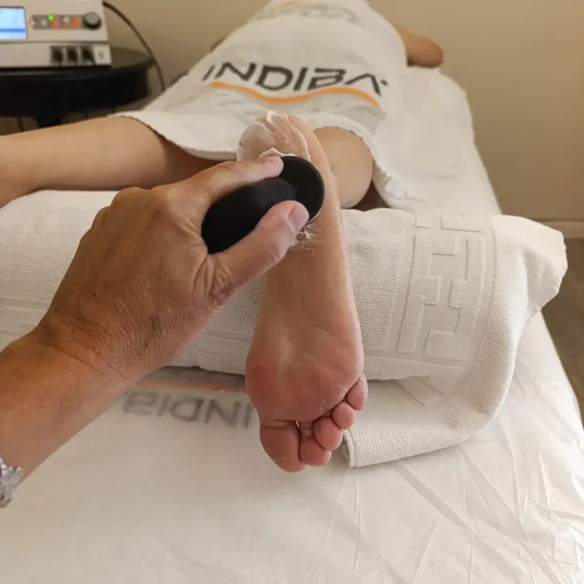

INDIBA Activ
Radiofreqüència que pot formar part del tractament de fisioteràpia quan està indicada. Pot ajudar a:
- Afavorir la circulació i el metabolisme dels teixits.
- Modular el dolor.
- Disminuir la sensació de rigidesa.
- Facilitar la recuperació dels teixits.
- Complementar el treball manual i l’exercici terapèutic.
«INDIBA no substitueix la fisioteràpia. És una eina dins de la fisioteràpia.»